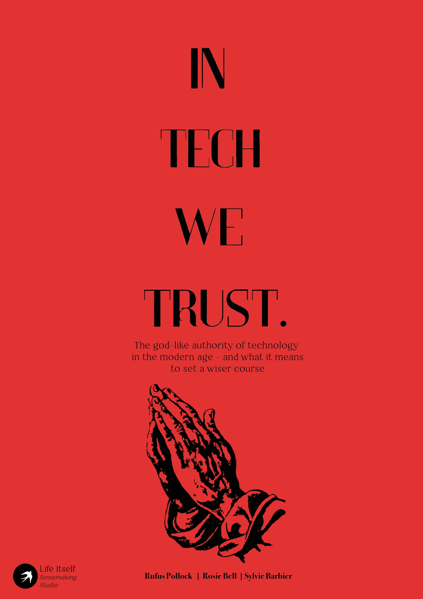
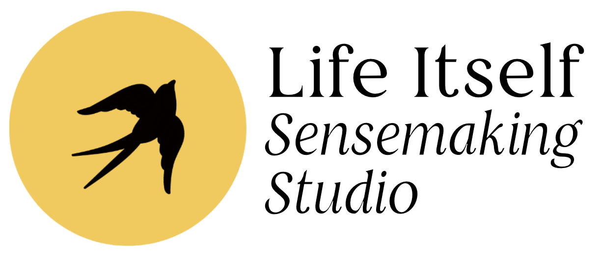
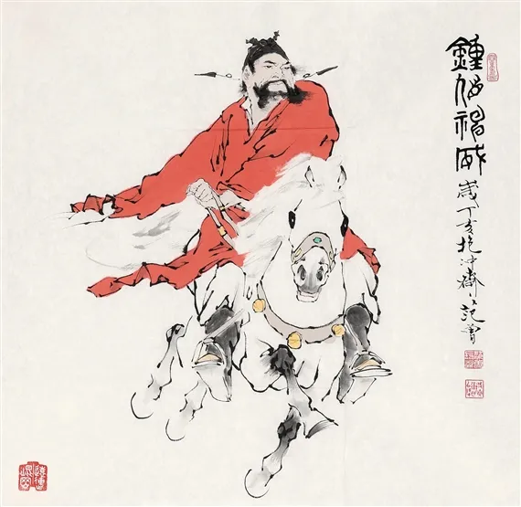
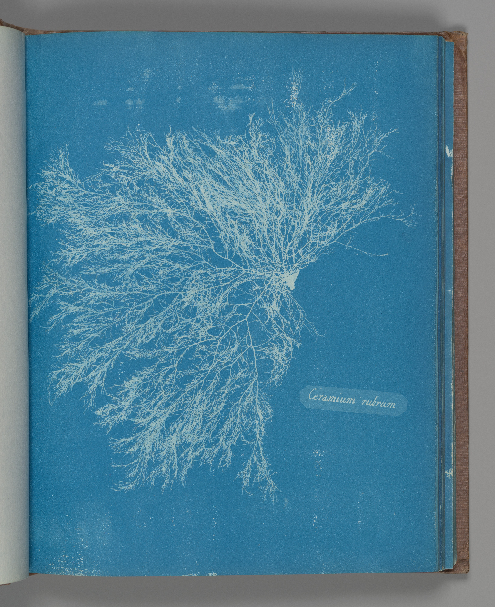

The Bomb

The bombing of Nagasaki, 9 August 1945
The god-like authority of technology in the modern age — and what it means to set a wiser course
Rufus Pollock, Sylvie Barbier, and Rosie Bell
18 March 2026
secondrenaissance.net

Our powers keep outrunning our capacity to use them wisely
And the gap is accelerating.
"Physicists split the atom without any hesitations the very moment they knew how to do it."
The bombing of Nagasaki, 9 August 1945
At the highest levels of climate policy, our plans increasingly rely on future technological breakthroughs that don't exist yet.
We're betting civilisation on faith in tech to fix what tech broke.
We handed addictive technology to entire populations of children.
No experts in the effects on youth mental health existed to consult — because the technology arrived before the expertise.
"Humanity is about to be handed almost unimaginable power, and it is deeply unclear whether our social, political, and technological systems possess the maturity to wield it."
Unleash first, understand later.
Each time the stakes get higher.
Technology: from servant to master
"A person is sitting on a horse, galloping very quickly. At a crossroads, a friend shouts, 'Where are you going?' The man says, 'I don't know, ask the horse!'"

We tell ourselves: a need arises, innovation meets it, rational humans choose what's best.
But we've normalised addiction to our smartphones. We "consume" our world through algorithmic feeds that hijack our attention and sell it for profit.
We don't question it — because the story says we're choosing freely.
We unleash a technology. It creates problems. We unleash more technology to fix those problems. The problems compound.
Each fix creates the next crisis.
2013. Thich Nhat Hanh is invited to Google headquarters. The conversation turns to addictive apps.
The Zen Master suggests:
"Mobile phones could easily have a mindfulness bell — a sound every quarter hour to interrupt the addictive pattern and recall people to themselves."
The engineer objects:
"But wouldn't we be imposing something people don't need?"
"It's not so simple. People's responses can come from real needs or false needs. Hunger can signal a real need to eat. But many people eat to escape their suffering. The same is true with technology. You're often serving sensations to people to conceal their suffering — loneliness, anxiety. You have to help people distinguish."
"We don't impose — we let people choose freely."
But choice is useless without the capacity to choose well.
We believe ourselves fully rational and fully agentic — and this belief blinds us to the ways technology distorts our agency.
We don't just fail to control technology — we actively worship it.

The horse isn't just running away.
We're worshipping the horse.
The modern cultural paradigm
These aren't just bad habits. They're deep features of how modern culture sees reality:
Why governance alone can't work
"Can't we just regulate better?"
"Should we pause?"
The answer is always the same:
"We can't. If we pause, someone else won't."
"If you had a peaceful civilisation and Genghis Khan wanted that area… your peaceful civilisation was wiped out. The same is true if you want to internalise the cost of carbon: your country gets destroyed by whoever externalises that cost. The thing that has been more successfully dominant, extracted more, grown its violence capability, wins. And that thing plus exponential tech, at planetary boundaries, self-terminates."
Imagine defending a fort together.
If everyone stays, some may die — but most survive and the enemy is repelled.
Anyone who leaves may save themselves — provided others stay behind.
But if enough people try to save themselves, the battle is lost and everyone dies.
AI. Climate. Nuclear weapons.
The fort — at planetary scale.
A worldview of separateness
These aren't coordination failures you can engineer your way out of.
They're rooted in a worldview that sees reality as fundamentally divided: separate individuals competing for advantage.
Every attempt to fix tech governance within this paradigm reproduces the paradigm.
For over a thousand years, the Subak irrigation system in Bali has solved what should be an intractable collective action problem.
It's not just irrigation — it's a network of water temples.
The whole system expresses a philosophy (Tri Hita Karana) uniting spirit, the human world, and nature. Rice is a gift from god. Water temple rituals emphasise dependence on the living world.
The cooperation didn't come from rational incentive design. It came from shared meaning, shared identity, shared sense of belonging to something larger.
You cannot govern technology wisely without shifting the cultural paradigm that produces our dysfunctional relationship with it.
The attempts to regulate, align, and govern technology will keep failing as long as they operate within the worldview of separate, competing, rational individuals.
You can't fix a paradigm problem with paradigm tools.
Sketched
It's difficult to be wise in a rush.
Imagine a moratorium: six months for philosophers, spiritual leaders, technologists, facilitators to ask together — Do we want this? Do we want it now? How do we contain it?
Beyond homo economicus — restoring value to intuition, embodied knowing, emotional intelligence, and the subtle inner senses that help us discern what's genuinely good.
These aren't soft extras. They're essential capacities for wise choice-making that our rationalist culture has systematically sidelined.
"To be is always to inter-be."
Nothing exists in isolation. And this contains a simple, devastating insight:
Nobody wins a competition that ends in shared destruction.
When you perceive identity with each other and the world, there are no externalities. Collective action problems become dissoluble.

"The godlike status of technology has become a vicious circle. The more machines empower us, the more willingly we defer to them — rendering ourselves less capable of resisting technological momentum. Restoring wise relationship with technology first requires transforming our impoverished, computational view of what it means to be human."